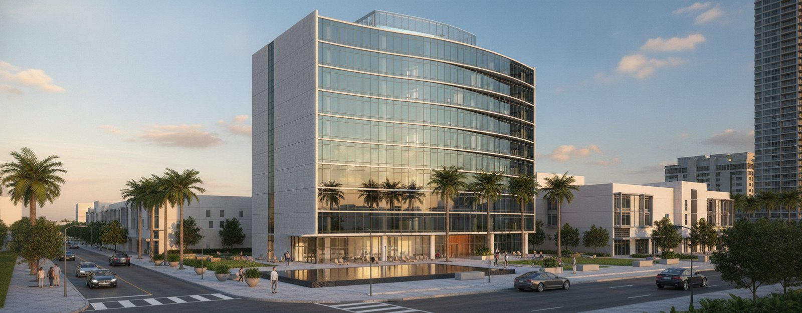
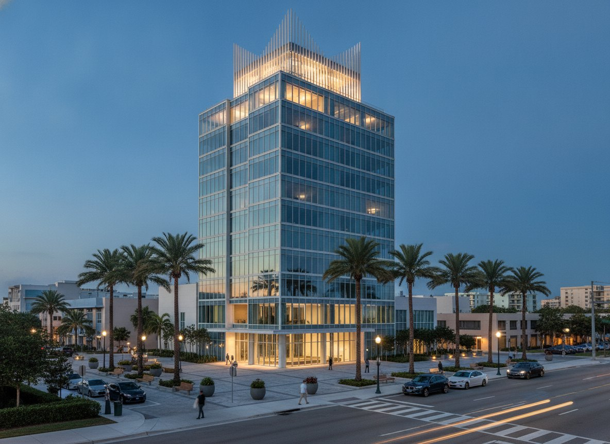
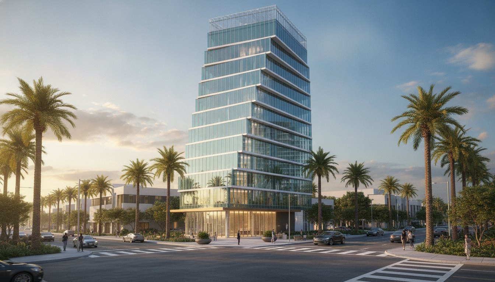
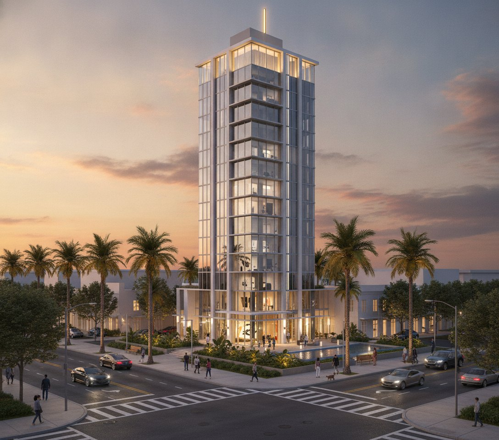
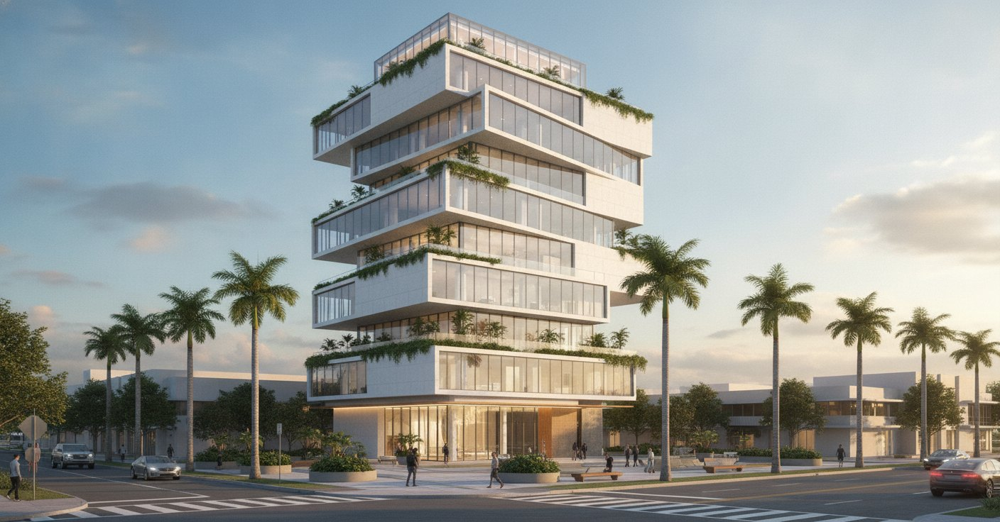

AI-driven Revit production
Send drawings. Get back native Revit on your template — built by automation we wrote, signed off by a BIM specialist.
Autodesk Developer Network member · #USUS0234 · Revit 2025–2027





GemelasGE-2601
Twin residential towers · sky bridges · 8 views
PódioPD-2601
Mixed-use · retail podium · 5 storeys · 7 views
CurvaCU-2601
Residential tower · curved facade · 8 views
CoronaCR-2601
Mid-rise · crowned massing · 8 views

Faro AltoFA-2602 Tower · beacon crown · vertical core · 8 views
DiagridDG-2601
Office tower · diagrid exoskeleton · 8 views
BalconesBA-2601
Residential · stacked balcony bands · 8 views
GiroGI-2601
Tower · twisting floor plates · 8 views

DesplazadoDE-2601 Tower · staggered volumes · 8 viewsThe difference
Not a faster draughtsman. An automation layer we wrote ourselves that drives Revit directly — and a correction ledger behind it that gets more accurate every project, because every mistake is written down and never repeated.
It is why a set comes back in days, and why placement is proved against the county record instead of eyeballed onto an aerial. A BIM specialist signs off on all of it.
The system is not for sale. What it produces is.
PDF, DWG or sketch to native Revit.
Sheets and schedules on your titleblock.
Context and submittal files, measured.
AI-rendered from your model, your design held exactly.
Fixed number and a date, usually the same day.
Start a project